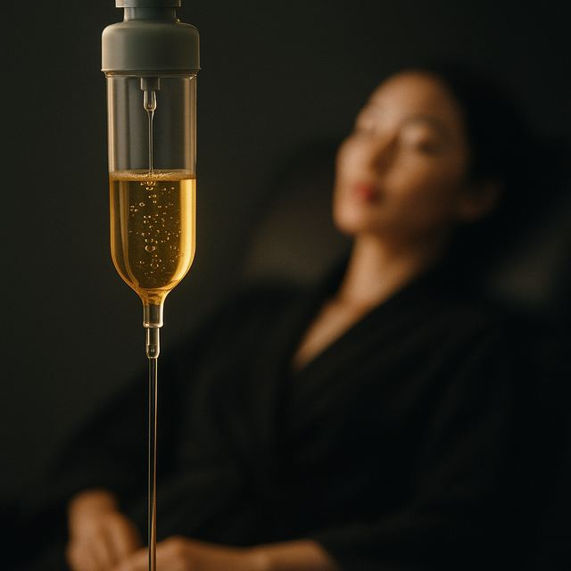

Glow IV Drip in Seoul: what it is, how it feels and what it costs
Glutathione + vitamin IV for brightness and recovery.
 Romie · Glow Up Seoul · Updated 17 Oct 2026 · 3 min read
Romie · Glow Up Seoul · Updated 17 Oct 2026 · 3 min read
Quick answer
Glutathione + vitamin IV for brightness and recovery. No downtime, results last short-term, and reference prices in Seoul start from ₩120,000 (per drip).
- DowntimeNo downtime
- LastsShort-term
- FeelsGentle
- From₩120,000per drip · ≈ $90
What it is
A glutathione and vitamin IV for brightness, recovery and an energy reset — a relaxing add-on to any visit.
How it works
Antioxidants and vitamins are delivered straight into the bloodstream for full absorption, supporting brighter skin and recovery.
| Mechanism | IV antioxidants + vitamins |
|---|---|
| Best for | Brightening, jet-lag recovery |
| Sensation | A small needle, then rest |
| Downtime | None |
| Best as | A short series |
What to expect
Sit back for 30–40 minutes. Most enjoy it as a wellness ritual alongside their skin treatments.
Good for
Pigmentation
The Glow IV delivers high-dose glutathione and vitamin C straight into the bloodstream, where they inhibit melanin formation and neutralise oxidative stress. Over a course of drips this brightens overall tone and supports a more even complexion from the inside out.
Why people love it
- Brightening boost and an energy reset
- A relaxing add-on to any visit
Good to know
- Best as a series for a visible effect
Recovery: None.
Questions people ask about Glow IV Drip
What is Glow IV Drip?
Glutathione + vitamin IV for brightness and recovery.
How long does Glow IV Drip last?
Results usually last short-term. Best as a series for a visible effect
Is there downtime after Glow IV Drip?
None.
Does Glow IV Drip hurt?
Most people describe it as gentle. What it feels like: A small needle, then rest.
How much does Glow IV Drip cost in Seoul?
Reference prices at our partner clinics start from ₩120,000 (per drip, ≈ $90). You get a full written quote before anything is booked.
Who is Glow IV Drip good for?
People who want to improve pigmentation. Your doctor confirms whether it suits you at the consultation.
Not sure it’s right for you?
Send Romie a photo and your concern. She’ll tell you honestly, even if the answer is “you don’t need this”.
Ask Romie on WhatsAppThis guide is general information, not medical advice. Whether a treatment suits you is decided by your doctor at consultation. Prices are reference prices from partner clinics for planning only.